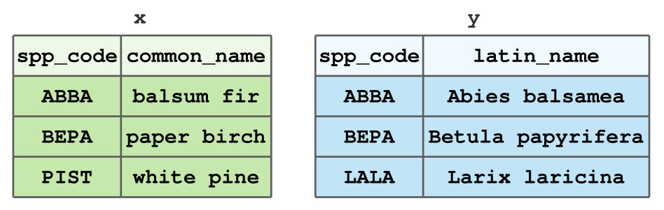

Joining and Reshaping Data
FOR 128: Lab 9
Welcome
Welcome to Lab 9! Today, we’ll focus on data joins and reshaping data. Parts 1 and 2 of this lab focuses on building your dplyr skills, especially in relation to joins. However, you’ll need to use some other dplyr functions along the way. In Part 3 of the lab, we’ll focus on reshaping data with tidyr.
Learning objectives
- Use
dplyrjoins - Use
tidyrto reshape data
Deliverables (i.e., what to put in the lab drop box)
Upload your rendered PDF (lab_09.pdf) and Quarto (lab_09.qmd) document to the lab drop box. Make sure the Quarto document properly renders to PDF.
Collaborator(s)
List any collaborators you worked with below.
Exercise 0
Load any packages you’ll need for this lab below.
Part 1: Toy Data
For this part, you’ll first work with the small datasets x and y presented in class to get started with joins. After a few exercises, you’ll move to some real data from the US Forest Service Forest Inventory & Analysis (FIA) program to gain more experience joining complex datasets.
Exercise 1
Create the x and y datasets that we have used over the lectures related to data joins using the tibble() function. These datasets are shown below for your convenience.
In R, your resulting tibbles should look as follows:
x# A tibble: 3 × 2
spp_code common_name
<chr> <chr>
1 ABBA balsum fir
2 BEPA paper birch
3 PIST white pine y# A tibble: 3 × 2
spp_code latin_name
<chr> <chr>
1 ABBA Abies balsamea
2 BEPA Betula papyrifera
3 LALA Larix laricina Exercise 2
Create a dataset called z by joining x and y by their species code. Retain only the rows in x and y that have matching species codes. Print your resulting tibble z. Justify which join you used.
# A tibble: 2 × 3
spp_code common_name latin_name
<chr> <chr> <chr>
1 ABBA balsum fir Abies balsamea
2 BEPA paper birch Betula papyriferaExercise 3
Now, create a dataset called w that contains all the rows in x, but only the rows in y that have a species code that match to x by joining x and y. Make sure the column order is spp_code, common_name, latin_name Justify which join you used.
# A tibble: 3 × 3
spp_code common_name latin_name
<chr> <chr> <chr>
1 ABBA balsum fir Abies balsamea
2 BEPA paper birch Betula papyrifera
3 PIST white pine <NA> Exercise 4
Next, with another join of x and y, create a dataset called w_clone with the same rows, columns, and values as w, but that has the latin_name column before common_name. Justify which join you used.
# A tibble: 3 × 3
spp_code latin_name common_name
<chr> <chr> <chr>
1 ABBA Abies balsamea balsum fir
2 BEPA Betula papyrifera paper birch
3 PIST <NA> white pine Exercise 5
Use a filtering join to check if there are any species codes in y that do not exist in x. Are there any? If so, what is the species code?
# A tibble: 1 × 2
spp_code latin_name
<chr> <chr>
1 LALA Larix laricinaPart 2: FIA Data
For this part, you’ll use four dataset from the Forest Inventory & Analysis Program (FIA). These data are available on the course website in the “data_lab9.zip” file. The plot_biomass.csv dataset contains information on the unique FIA plot ID (PLT_CN) and a measurement of aboveground biomass for each plot. The plot_locations.csv dataset contains location information for each of those same plots, along with the unique identifier (PLT_CN). Notably, plot_locations.csv has columns denoting the state and county the plot resides in. However, we don’t have the actual state and county names for each plot, just their unique code. We will have to do some data joins with the state_reference.csv and county_reference.csv datasets to find out where these plots are.
Exercise 6
Load in the four datasets included in the posting of Lab 9 on the course website. Name each of them the same as they are named as files, without the .csv extension. For example, for the “plot_biomass.csv” file, name the object plot_biomass, etc. Take a look at these datasets and try to understand them. What does a row represent in each one?
plot_biomass# A tibble: 191 × 2
PLT_CN DRYBIO_AG_TPA
<dbl> <dbl>
1 1.75e14 122.
2 1.75e14 76.2
3 1.75e14 4.21
4 1.75e14 13.2
5 1.75e14 90.9
6 1.75e14 96.2
7 1.75e14 397.
8 1.75e14 2.54
9 1.75e14 290.
10 2.17e14 182.
# ℹ 181 more rowsplot_locations# A tibble: 191 × 5
PLT_CN STATECD COUNTYFIPS LON_PUBLIC LAT_PUBLIC
<dbl> <dbl> <dbl> <dbl> <dbl>
1 3.08e13 41 41051 -122. 45.6
2 4.12e14 41 41009 -123. 45.9
3 4.85e14 41 41009 -123. 45.8
4 3.08e13 41 41009 -123. 45.8
5 2.17e14 41 41009 -123. 46.0
6 4.85e14 41 41009 -123. 46.1
7 4.12e14 41 41051 -122. 45.5
8 3.08e13 41 41009 -123. 45.8
9 2.17e14 41 41009 -123. 45.9
10 5.59e14 41 41009 -123. 45.9
# ℹ 181 more rowsstate_reference# A tibble: 59 × 3
state_cd state_name state_abbr
<dbl> <chr> <chr>
1 1 Alabama AL
2 2 Alaska AK
3 4 Arizona AZ
4 5 Arkansas AR
5 6 California CA
6 8 Colorado CO
7 9 Connecticut CT
8 10 Delaware DE
9 11 District of Columbia DC
10 12 Florida FL
# ℹ 49 more rowscounty_reference# A tibble: 3,233 × 3
STATENM COUNTYNM COUNTYFIPS
<chr> <chr> <chr>
1 Ohio Highland 39071
2 California Alpine 06003
3 Florida Escambia 12033
4 Illinois Lawrence 17101
5 Mississippi Wayne 28153
6 Mississippi Tishomingo 28141
7 Montana Sanders 30089
8 New York Albany 36001
9 Pennsylvania Potter 42105
10 Missouri Greene 29077
# ℹ 3,223 more rowsExercise 7
Now that you’ve got a sense of the data, join two datasets together to get both plot locations and plot biomass in the same tibble. Call this new tibble plots. Make sure to specify what you are joining by, and justify which join you used. Your new dataset should have 191 rows and 6 columns. Take a glimpse() at your new tibble.
glimpse(plots)Rows: 191
Columns: 6
$ PLT_CN <dbl> 1.747633e+14, 1.747635e+14, 1.747635e+14, 1.747636e+14, …
$ DRYBIO_AG_TPA <dbl> 122.36957, 76.15349, 4.20973, 13.23662, 90.90198, 96.228…
$ STATECD <dbl> 41, 53, 53, 53, 53, 41, 41, 53, 41, 41, 41, 41, 41, 41, …
$ COUNTYFIPS <dbl> 41051, 53013, 53013, 53013, 53013, 41051, 41051, 53013, …
$ LON_PUBLIC <dbl> -121.9465, -117.8284, -117.6408, -117.7454, -117.7872, -…
$ LAT_PUBLIC <dbl> 45.63014, 46.08317, 46.24816, 46.22776, 46.10631, 45.530…Exercise 8
Now you have your plot location information and plot biomass measurements in one tibble, but we still don’t know where these plots are. Add some columns to plots by joining it with state_reference in a way such that each row of plots now has a state name and abbreviation associated with it. Use dplyr to figure out what state(s) are these plots in?
plots# A tibble: 191 × 8
PLT_CN DRYBIO_AG_TPA STATECD COUNTYFIPS LON_PUBLIC LAT_PUBLIC state_name
<dbl> <dbl> <dbl> <dbl> <dbl> <dbl> <chr>
1 1.75e14 122. 41 41051 -122. 45.6 Oregon
2 1.75e14 76.2 53 53013 -118. 46.1 Washington
3 1.75e14 4.21 53 53013 -118. 46.2 Washington
4 1.75e14 13.2 53 53013 -118. 46.2 Washington
5 1.75e14 90.9 53 53013 -118. 46.1 Washington
6 1.75e14 96.2 41 41051 -122. 45.5 Oregon
7 1.75e14 397. 41 41051 -122. 45.5 Oregon
8 1.75e14 2.54 53 53013 -118. 46.3 Washington
9 1.75e14 290. 41 41051 -122. 45.5 Oregon
10 2.17e14 182. 41 41051 -122. 45.6 Oregon
# ℹ 181 more rows
# ℹ 1 more variable: state_abbr <chr>Exercise 9
Use a filtering join to see if any rows of plots do not have a match in state_reference. Are there any? If so, how many?
# A tibble: 0 × 8
# ℹ 8 variables: PLT_CN <dbl>, DRYBIO_AG_TPA <dbl>, STATECD <dbl>,
# COUNTYFIPS <dbl>, LON_PUBLIC <dbl>, LAT_PUBLIC <dbl>, state_name <chr>,
# state_abbr <chr>Exercise 10
Now you’ve added biomass and state information to your plot data. Great job! We have one more dataset to join. Join the county_reference tibble to plots so you can see what county each FIA plot is in. Hint: you might get an error here. Make sure to check the column classes you are joining by and change them as needed. You should have 191 rows and 10 columns in plots after this join. What counties are these plots in?
plots# A tibble: 191 × 10
PLT_CN DRYBIO_AG_TPA STATECD COUNTYFIPS LON_PUBLIC LAT_PUBLIC state_name
<dbl> <dbl> <dbl> <chr> <dbl> <dbl> <chr>
1 1.75e14 122. 41 41051 -122. 45.6 Oregon
2 1.75e14 76.2 53 53013 -118. 46.1 Washington
3 1.75e14 4.21 53 53013 -118. 46.2 Washington
4 1.75e14 13.2 53 53013 -118. 46.2 Washington
5 1.75e14 90.9 53 53013 -118. 46.1 Washington
6 1.75e14 96.2 41 41051 -122. 45.5 Oregon
7 1.75e14 397. 41 41051 -122. 45.5 Oregon
8 1.75e14 2.54 53 53013 -118. 46.3 Washington
9 1.75e14 290. 41 41051 -122. 45.5 Oregon
10 2.17e14 182. 41 41051 -122. 45.6 Oregon
# ℹ 181 more rows
# ℹ 3 more variables: state_abbr <chr>, STATENM <chr>, COUNTYNM <chr>Exercise 11
Now you’ve wrangled all your data into one tibble. Great job! Use a series of piped dplyr functions to compute the average biomass in each county.
# A tibble: 3 × 2
COUNTYNM avg_bio
<chr> <dbl>
1 Clark 92.4
2 Columbia 60.6
3 Multnomah 187. Part 3: Reshaping Data
You’ll find the “example_plot_data.csv” data file in the “data_lab9.zip” file on the course website. It holds tree data measured on 2 1/20-th acre plots.
Your goal is to make a stand table with species as rows and 4-inch DBH classes as columns and values of trees per acre. These trees per acre values will be an average from the per acre values recorded for each plot. This average is our best estimate for the trees per acre for the area sampled using the two plots.
Exercise 12
Read in the “example_plot_data.csv” into a tibble called example_plots.
example_plots# A tibble: 8 × 3
plot_id species dbh_in
<dbl> <chr> <dbl>
1 1 Basswood 5.1
2 1 Basswood 5.5
3 1 Beech 10.1
4 1 Red oak 5
5 2 Beech 11.5
6 2 Beech 12.2
7 2 Basswood 6
8 2 Red oak 10 Exercise 13
Add two new columns to the example_plots tibble. The first dbh_4in holds the 4-inch DBH class the given tree falls in. The second TF holds the tree factor for each tree (i.e., how many trees per acre that one tree represents). Add both columns with a single call to mutate().
Note that since these are 20 acre plots, the tree factor should be 20 for each tree.
HINT: When creating the dbh_4in column, you can use cut_width() from ggplot2 or a case_when() inside of a mutate().
example_plots# A tibble: 8 × 5
plot_id species dbh_in tf dbh_4in
<dbl> <chr> <dbl> <dbl> <fct>
1 1 Basswood 5.1 20 [2,6]
2 1 Basswood 5.5 20 [2,6]
3 1 Beech 10.1 20 (10,14]
4 1 Red oak 5 20 [2,6]
5 2 Beech 11.5 20 (10,14]
6 2 Beech 12.2 20 (10,14]
7 2 Basswood 6 20 [2,6]
8 2 Red oak 10 20 (6,10] Exercise 14
Compute a stand table for plot 1 and 2. They should look like the tables below.
Plot 1
# A tibble: 3 × 4
# Groups: species [3]
species `[2,6]` `(6,10]` `(10,14]`
<chr> <dbl> <dbl> <dbl>
1 Basswood 40 0 0
2 Beech 0 0 20
3 Red oak 20 0 0Plot 2
# A tibble: 3 × 4
# Groups: species [3]
species `[2,6]` `(6,10]` `(10,14]`
<chr> <dbl> <dbl> <dbl>
1 Basswood 20 0 0
2 Beech 0 0 40
3 Red oak 0 20 0Exercise 15
The stand table estimate we want combines information from each plot stand table by averaging their cell values. For example, plot 1 has 40 Basswood in the [2,6] in DBH class, and Plot 2 has 20 Basswood in the [2,6] in DBH class. So, best estimate of Basswood in the [2,6] in DBH class should be an average of 40 and 20 (i.e., mean(c(40,20))) which is 30.
The code below computes the desired stand table estimate (i.e., averages across plots) all at once. Your job is to study this code and convince yourself you understand it and can replicate it for different data. Take it apart. Run it bit by bit. Reverse engineer it to understand how it works. Use math by hand to confirm the average from the two tables above are the values you see in the table below.
example_plots %>%
complete(plot_id, species, dbh_4in, fill = list(tf = 0)) %>%
group_by(plot_id, species, dbh_4in) %>%
summarize(tf_plot_level = sum(tf)) %>% ## Plot-level summary of trees per acre.
group_by(species, dbh_4in) %>%
summarise(mean_tpa = mean(tf_plot_level)) %>% ## Forest-level mean of trees per acre.
pivot_wider(names_from = dbh_4in, values_from = mean_tpa)`summarise()` has grouped output by 'plot_id', 'species'. You can override
using the `.groups` argument.
`summarise()` has grouped output by 'species'. You can override using the
`.groups` argument.# A tibble: 3 × 4
# Groups: species [3]
species `[2,6]` `(6,10]` `(10,14]`
<chr> <dbl> <dbl> <dbl>
1 Basswood 30 0 0
2 Beech 0 0 30
3 Red oak 10 10 0Wrap up
Congratulations! You’ve made it to the end of Lab 9. Make sure to render your final document and submit both the .pdf and .qmd file to D2L.